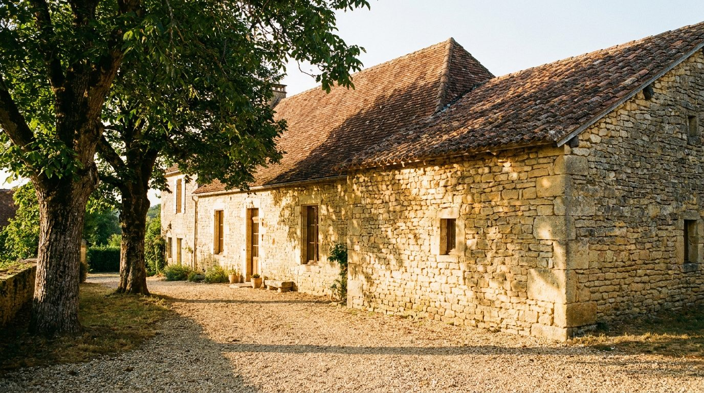
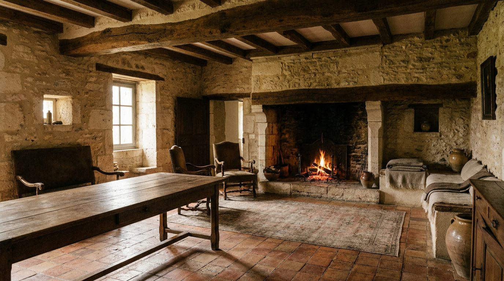

Atlante · FR-11 · Francia · Provincia
Maison di pietra e travi (Périgord / Quercy)
Esempi · esterno e interno


Perché funziona
il "lusso rustico" francese: pietra a vista, travi, camini monumentali. Funziona per arredi in legno, ceramiche, tessuti grezzi.
Architettura · elementi riproducibili
- Muri in pietra calcarea 0,5–0,8 m, conci a vista, nicchie
- Travi di castagno 20–25 cm, travetti e assito a vista
- Camino monumentale 2,0–3,0 m con mensola in pietra
- HSP 2,6–3,2 m; finestre piccole 0,8–1,2 m con imbotti profondi
- Pavimento in pietra o cotto esagonale
Luce
forte contrasto tra imbotti luminosi e interni in penombra; luce calda riflessa dalla pietra; 4500–5500 K; nessuna luce diffusa ampia.
Prompt di generazione (EN)
Interior of a restored 18th-century Périgord stone house, thick limestone walls with deep window reveals, exposed chestnut beams, monumental stone fireplace, hexagonal terracotta floor, oak refectory table, linen slipcovered chairs, wrought-iron lantern. Bright soft daylight entering through a small deep window, warm bounce off the ochre stone, 5000 K, dark ambient corners. 28 mm lens, f/4, camera at 1.3 m, three-quarter composition, natural colour, no people, 4:5.
Errori tipici da controllarepietra resa come mattoni; travi troppo regolari; camino piccolo; finestre grandi da villa toscana.